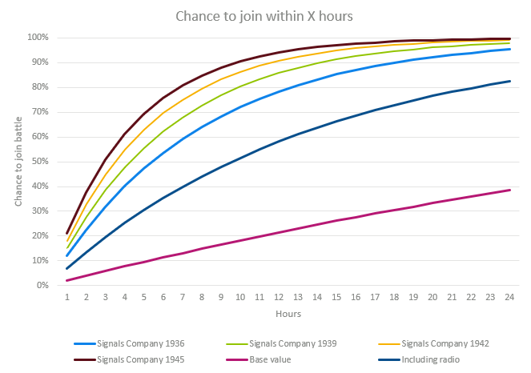

支援连
原页面：Support company
在游戏中，支援连是师的基本组成部分。
与营不同，支援连是可选的。一个师最多可以有 5[1]个支援连，但每种类型不能超过一个。支援连可以改变并提升师的属性和作战能力。它们的人力成本通常比营更低，并且不影响师的战斗宽度或最大速度。
科研
- 主条目：支援连科技
类型
- 支援火炮连：由于火炮较少，其软攻加成低于一线团的火炮营。它不会拖慢师的速度†，也不影响空降。
- 支援防空连：由于火炮较少，其对空攻击加成低于一线团的防空营。它不会拖慢师的速度†，也不影响空降。
- 支援反坦克连：由于火炮较少，其硬攻和穿甲加成低于一线团的反坦克营。它不会拖慢师的速度†，也不影响空降。
- 支援火箭炮连：与普通支援火炮类似，但还会为师的突破属性提供加成，该属性用于在进攻时规避敌军攻击。
- 工兵连：提高师的构筑工事属性，并有助于攻击要塞和渡河。
- 骑兵侦察连：提高在困难地形中的速度以及师的侦察属性，使战斗中更容易克制敌方战斗战术。
- 摩托化侦察连：提高在困难地形中的速度以及师的侦察属性，使战斗中更容易克制敌方战斗战术。
- 装甲车侦察连：提高在困难地形中的速度以及师的侦察属性，使战斗中更容易克制敌方战斗战术。
- 轻型坦克侦察连：提高在困难地形中的速度以及师的侦察属性，使战斗中更容易克制敌方战斗战术。
- 军事警察：为其所在师的一线营提供镇压属性加成，有助于减轻游击队的影响。让军事警察连搭配 2-6 个仅配备最低限度装备、训练程度最低的骑兵营，就能组成一支高效的二线治安师。
- 维修连：为师提供装备可靠性加成，减少训练和战斗中的装备损失。建议配给使用昂贵装备（如坦克）的战斗单位。
- 野战医院：提高伤员归队属性（将损失人力的一定比例返还人力池），并减少因伤亡造成的经验损失。建议配给前线战斗师。
- 后勤连：降低整个师的补给消耗。这在补给匮乏的地区很有价值，也能避免因补给原因而被迫分散部署。
- 通信连：提高师的主动性属性，加快计划速度，并提高战斗中预备队增援的概率。
Considerations
† 请注意，支援连不影响师的速度，也不影响战斗宽度，因为它们是留在战斗前线后方、由「前线」战斗营交战的力量。因此，一个牵引式反坦克支援连不会影响一个快速师 12 kph 的速度，但在团级序列中加入一个牵引式反坦克战斗营会使同一个师减速到牵引式反坦克的 4 KPH 基础速度。所以，支援火炮、防空或反坦克支援单位可以为快速师增添宝贵的能力。
以 4 kph 行军的步兵师，与同样以 4 kph 行军的战斗营配合得恰到好处。在师编制界面中，添加支援连给师整体属性带来的额外加成与效果可在提示框中查看。尽管这些连在历史上可能远大于连级规模，但为了与一线团中的营区分开，它们仍被称为支援连。
在师编制设计器中
在师编制设计器中，支援连以纵向方式显示在「支援」部分下。
每个支援连在师编制中添加、替换或移除需要花费10[2]  陆军经验。
陆军经验。
深入概述
防空（AA）
防空主要有助于防御对师所参与战斗进行攻击的战术轰炸机和近距空中支援，同一场战斗中的多个师可以汇集它们的防空火力。牵引式和自行防空只会向攻击该师或参与同一战斗的其他师的敌机开火。
它们对战略轰炸机毫无作用（它们飞得太高），所以在驻军中加防空无助于保护工业。
至少截至 1.3 版本，开发者曾表示[3]附属防空可以击落战斗机，但需要大量防空（视频中的例子展示了多个线列营，而不只是一个孤零零的支援连）。当然，如果你没有战斗机，在前线每个师里都放防空可能是你唯一的选择。
牵引式防空单位也有还算不错的反装甲能力。例如，二级牵引式防空炮的穿透足以抵消一级中型坦克的装甲值。然而，自行防空炮的反装甲能力远没有这么强。防空炮不需要钨来制造，因此对小国来说可能是一种预算型反坦克选择。
在师中编有牵引式或自行防空可以减轻敌方制空权造成的惩罚。
在击落飞机方面，防空比战斗机更高效（1.10 版本）。使用 1936 年装备的防空每 8 小时最多可击落 5% 的攻击机。
工兵（ENG）
工兵在森林、丛林、沼泽和河流中提供移动加成。它们在森林、丛林、丘陵、沼泽、河流和要塞中提供恒定的防御加成。此外它们还在此之上提供工事加成。升级工兵会提高工事加成，并在要塞（II）、河流（III）和城市环境（IV）中增加额外的进攻和防御加成。最后，它们对两栖（海军登陆）提供恒定进攻加成，该加成可与海军陆战队的加成叠加。工兵也会提高师的防御和软攻，但不如一个步兵营那么多。
先锋队是工兵支援连的变体，所有已解锁 提升海军陆战队特种部队学说的国家都可以使用。它们提供的工事更少，取消了其两栖（海军登陆）进攻加成，不在森林、丘陵或丛林地形中提供地形加成，在沼泽、河流和要塞中提供的防御加成也更差，但提供更多突破（尤其是对海军陆战营），并在沼泽、河流和要塞中提供更好的进攻加成。它们可以通过特种部队学说升级获得额外加成。关键在于，丛林专家会恢复其部分丛林地形防御加成，并让它们在丛林地形中提供进攻和移动加成，而滩头工作队则让它们提供超过工兵连的两栖（海军登陆）进攻、防御和移动加成，但同一时间只能有一个这类学说加成生效。先锋队最适合用于在其他方面平坦的地形中渡河作战的进攻型师，或用于与其所选特种部队学说加成相匹配的地形。在其他情况下，它们要么与普通工兵连相当，要么不如普通工兵连。
提升海军陆战队特种部队学说的国家都可以使用。它们提供的工事更少，取消了其两栖（海军登陆）进攻加成，不在森林、丘陵或丛林地形中提供地形加成，在沼泽、河流和要塞中提供的防御加成也更差，但提供更多突破（尤其是对海军陆战营），并在沼泽、河流和要塞中提供更好的进攻加成。它们可以通过特种部队学说升级获得额外加成。关键在于，丛林专家会恢复其部分丛林地形防御加成，并让它们在丛林地形中提供进攻和移动加成，而滩头工作队则让它们提供超过工兵连的两栖（海军登陆）进攻、防御和移动加成，但同一时间只能有一个这类学说加成生效。先锋队最适合用于在其他方面平坦的地形中渡河作战的进攻型师，或用于与其所选特种部队学说加成相匹配的地形。在其他情况下，它们要么与普通工兵连相当，要么不如普通工兵连。
 「诸神黄昏」引入了突击工兵连和装甲工兵连，作为工兵支援连的变体。它们在完成「军用工程车辆」特殊项目后可用，不过装甲工兵连还要求已完成 1938 年的装甲工兵连科技。它们使用装甲支援车辆装备来替代部分支援装备和步兵装备。装备上的差别意味着它们的生产成本更高，并会给师增加燃料消耗、提高其补给消耗、降低其防御，但根据所使用的装备变体，它们也能为所属师提供一些额外的装甲、穿透、软攻、硬攻和突破。突击工兵用大部分工兵的地形防御和移动加成换来地形进攻加成，并且它们在城市地形中还能提供可观的进攻和移动加成。它们不为徒步步兵营提供额外工事，而是为这些营提供额外突破。与普通工兵相比，装甲工兵失去了丛林、沼泽和河流地形中的防御加成，但在更多地形类型中提供更高的移动加成，并在河流、要塞和城市地形以及两栖环境（海军登陆）中提供额外的进攻加成。装甲工兵还为装甲营提供额外突破。工兵的科技升级也会为这两个支援连提供类似的加成：突击工兵获得更高的进攻加成但没有防御加成，装甲工兵获得更高的防御加成但没有进攻加成。由于这些差异，突击工兵最适合用于进攻型师，而装甲工兵则更为小众，最适合用于防守型师——这些师负责守卫重要到足以证明其更高生产成本合理的重点省份，尤其是城市省份。
「诸神黄昏」引入了突击工兵连和装甲工兵连，作为工兵支援连的变体。它们在完成「军用工程车辆」特殊项目后可用，不过装甲工兵连还要求已完成 1938 年的装甲工兵连科技。它们使用装甲支援车辆装备来替代部分支援装备和步兵装备。装备上的差别意味着它们的生产成本更高，并会给师增加燃料消耗、提高其补给消耗、降低其防御，但根据所使用的装备变体，它们也能为所属师提供一些额外的装甲、穿透、软攻、硬攻和突破。突击工兵用大部分工兵的地形防御和移动加成换来地形进攻加成，并且它们在城市地形中还能提供可观的进攻和移动加成。它们不为徒步步兵营提供额外工事，而是为这些营提供额外突破。与普通工兵相比，装甲工兵失去了丛林、沼泽和河流地形中的防御加成，但在更多地形类型中提供更高的移动加成，并在河流、要塞和城市地形以及两栖环境（海军登陆）中提供额外的进攻加成。装甲工兵还为装甲营提供额外突破。工兵的科技升级也会为这两个支援连提供类似的加成：突击工兵获得更高的进攻加成但没有防御加成，装甲工兵获得更高的防御加成但没有进攻加成。由于这些差异，突击工兵最适合用于进攻型师，而装甲工兵则更为小众，最适合用于防守型师——这些师负责守卫重要到足以证明其更高生产成本合理的重点省份，尤其是城市省份。
侦察（REC）
侦察连在大多数地形上提供速度加成，并为指挥官提供侦察点数加成，从而提高克制敌方所选战术的几率。它们还会略微提高师的防御和进攻。侦察连有不同的类型，能力和装备各不相同：骑兵（1 侦察点）、摩托化（1.5）、装甲车（2；需要「抵抗运动」）、轻型坦克（1）、侦察游骑兵（1；需要反抗暴政）或直升机侦察（2；需要「诸神黄昏」）。


它们在大多数地形上提供大约 10% 的速度加成，具体数值因骑兵、摩托化、装甲车或轻型坦克而异。该速度加成不会因升级而提高。请考虑把步兵速度从 4 km/h 提高到 4.4 km/h，或把摩托化/轻型坦克从 12 km/h 提高到 13.2 km/h 的价值，并考虑这可能如何与车辆变体结合以达到特定速度目标，从而超越或击溃敌人。答案会因玩家而异，也很可能因师而异。例如，扩张和包围型师可能会觉得额外速度很有价值，而突击和突破型师则未必，尽管它们可能在激烈战斗中发现战斗战术加成很有价值。确切的速度加成见下表：
| 地形 | 骑兵侦察 | 摩托化步兵 | 装甲车 |
轻型坦克 | 直升机侦察连 |
侦察游骑兵连 |
远程巡逻 |
|---|---|---|---|---|---|---|---|
| River | +10% | +10% | +10% | +10% | +15% | +0% | +10% |
| 森林 | +5% | +5% | +5% | +10% | +15% | +15% | +15% |
| 丘陵 | +10% | +10% | +10% | +10% | +10% | +15% | +15% |
| 山地 | +10% | +10% | +5% | +10% | +10% | +10%、+20%搭配崎岖地形专家 | +15% |
| 平原 | +5% | +15% | +15% | +10% | +15% | +10% | +10% |
| 丛林 | +10% | +5% | +5% | +10% | +15% | +10% | +10% |
| 沼泽 | +10% | +10% | +10% | +10% | +15% | +0% | +10% |
| 沙漠 | +5% | +20% | +15% | +10% | +15% | +0% | +10% |
| Snow | +0% | +0% | +0% | +0% | +0% | +15%搭配寒冷天气专家 | +0% |
此外，如果敌方战术存在可用的克制战术，侦察连还能帮助克制敌方战术。侦察点数更多的一方会获得相当于5将领技能点的固定加成。在判定哪一方后选择战术时，该加成会计入指挥官的技能等级；先选择的一方处于劣势，因为另一方随后就知道哪些可用战术能克制先选方的战术。重要的只是一方点数比另一方多，差距大小无关紧要。每次侦察升级都会提高侦察点数，陆军学说选项中的 前进观察员和 「纵深渗透」也会提高侦察连提供的侦察点数。直升机旅和摩托化军事警察支援连同样会提高侦察点数，并可与任何侦察连搭配使用。评估侦察连时需要考虑的因素包括：双方可用战术的相对范围、可被克制的战术对一支军队作战的潜在重要性（例如「闪电战」和「突破」战术对坦克师非常有用，但它们分别会被「弹性防御」和「反手一击」战术克制），以及双方指挥官的技能等级。当同一方参战的多个师拥有多个不同的侦察点数值时，该方只采用其中最高的数值。

军事警察（MP）
该支援连并非用于前线，实际上也不用于任何战斗。它按百分比提高师的镇压属性。镇压可以对抗在地区内活动的游击队，阻止他们破坏工业。最好与骑兵、摩托化、装甲车和轻型坦克搭配，它们的镇压能力优于步兵营。虽然可以简单地把它们加入驻军师，但大多数人更倾向于专门为军事警察创建一个师编制。
摩托化军事警察是军事警察的变体，在完成同名的 1938 年科技后可用，而该科技要求已完成「军用工程车辆」特殊项目。它需要军用摩托车装备来替代部分支援装备和步兵装备。装备上的差别意味着它的生产成本更高，并会给任何加入它的师增加燃料消耗，不过对于使用含摩托化军事警察的师编制的驻军，这一燃料消耗不会生效。与军事警察相比，它们的补给消耗更高，但提供额外镇压以及可与侦察连叠加的侦察。它们随科技进步获得与普通军事警察相同的收益。然而，截至 1.15.1，它们无法享受
 人民军队授予骑兵营的高额镇压加成，这使得在以骑兵为主的驻军编制中，它们提供的镇压可能少于军事警察。
人民军队授予骑兵营的高额镇压加成，这使得在以骑兵为主的驻军编制中，它们提供的镇压可能少于军事警察。
如果有需要，军事警察或摩托化军事警察可以作为额外的步兵营使用，不过它们会大幅降低组织度，而使用支援火炮、支援火箭炮或工兵来提高师属性会更好。虽然摩托化军事警察的额外侦察在争取防御优势时可能有用，但编有它的师会在原本不消耗燃料时消耗燃料，这一点与更高的生产需求叠加起来，可能反而超过这一优势。
维修（MAIN）
维修连提高师中所有装备的可靠性属性，从而大幅减少因损耗而损失的装备数量。可靠性加成在师视图中显示为「可靠性加成」，而不是为每个师单独计算再重算；因此，该连的所有计算都必须在游戏之外完成。
该效果起初相当弱，因为它只提供 5% 的加成。这意味着可靠性为 80% 的（陆军）装备会被提升到 84%（80 × 1.05）。不过，该加成每级再增加 5%（分别为 10%、15% 和 20%）。这使那些通常无法升级的装备也能获得可靠性改善。机械化装备最为重要，但摩托化装备、所有牵引式武器以及支援装备同样受益。步兵装备也受益，但步兵装备容易生产，且初始可靠性为 90%，而非通常的 80%。等到「维修连 II」再考虑使用它并不是个坏主意。
对于可升级的装备，例如飞机，这意味着不必把升级点投入可靠性，除非它降到 80% 以下（或者让它降得更低，专注于在获得加成后维持 80% 可靠性）。这有可能节省大量经验值。有了 一步不退，低可靠性的车辆设计（例如使用汽油-电动引擎）变得更可行。当然，这要求所有使用该设计坦克的师都编有维修连。
一步不退，低可靠性的车辆设计（例如使用汽油-电动引擎）变得更可行。当然，这要求所有使用该设计坦克的师都编有维修连。
自 1.5 起，维修连还能从敌方师那里缴获原本会被摧毁的装备（数量等于其可靠性加成）。
装甲维修连是维修连的变体，在完成同名的 1938 年科技后可用，而该科技要求已完成「军用工程车辆」特殊项目。它使用装甲支援车辆装备来替代部分支援装备和步兵装备。装备上的差别意味着它的生产成本更高，并会给任何加入它的师增加燃料消耗，但根据所使用的装备变体，它也能为所属师提供一些额外的装甲、穿透、软攻、硬攻、防御和突破。与维修连相比，它们还为装甲营提供额外HP，并为所属师增加装备回收。装甲维修连的升级相比维修连的升级提供的可靠性加成更低，但装备缴获率和装备回收率更高，这使它们在坦克师中更有用，尤其是与普通维修连相比。
野战医院（HOS）
它们提供三项加成。第一，使用 1936 年医院时，战斗损失的 20% 会返回人力池而不是永久损失，同时也消除了这些损失对战争支持度的影响。第二，因战斗损失而损失的经验值减少 10%。第三，所有步兵、摩托化和机械化营提供 10% 更多HP，从而减少战斗中的装备损失，尤其是在进攻时。升级野战医院会提高前两项加成。一个师随着时间经历的战斗越多，野战医院带来的总体收益就越大，尤其是在补给不良的条件下进攻时。反过来，对于不太可能经历持续战斗、或者在交战时很可能被歼灭的师（例如某些安保、驻军或海岸防御师），它们就是浪费。
直升机医疗后送是野战医院连的变体，在完成 1938 年的直升机医疗后送连科技后可用，而该科技要求已完成「直升机」特殊项目。它需要直升机装备来替代部分卡车装备。装备上的差别意味着它的生产成本更高，并会给任何加入它的师增加燃料消耗，但它也能为所属师提供一些额外的装甲、穿透、防御和突破。与野战医院相比，直升机医疗后送的补给消耗更高，提供的经验值损失削减和额外HP更少，但提供更高的人力回流和战争支持度保护，并为所有步兵、摩托化和机械化营提供额外恢复率。升级直升机医疗后送相比升级野战医院提供的经验值损失削减加成更小，但反而提供更高的人力回流、战争支持度保护和额外恢复率加成。
从人力、战争支持度和HP的角度看，越大越好。每个野战医院都是按百分比计算，在大型师中拯救的生命和装备自然比在小型师中更多。对于直升机医疗后送来说这一点加倍成立，因为它们的加成恢复率同样按百分比计算，而且随着师中消耗燃料的营数量增加，其相对整个师的燃料消耗会下降。
不过从经验值的角度来看，在较小的师中每名士兵所值的经验值更多。因此，把它们加入少量精锐师可能是值得的。这些师可以是海军陆战队或伞兵师等。另一种可能是已经自行积累了高经验等级的普通步兵师。通过创建一份重复的师编制，可以给某些师加上野战医院，而不给其他原本完全相同的师加上，以帮助那些高经验值师保持其经验值。一个师的经验值越高，伤亡对平均经验值的削减就越大（因为补充兵员永远是新手）。在师还是新手状态时部署带有野战医院的新师，从经验值角度看完全是浪费。因此，使用野战医院时，你更有动力在部署前把新师训练到「正规」水平。
后勤（LOG）
它们提供固定 10% 的补给消耗削减和 5% 的燃料消耗削减，并会随升级而提高。由于是按百分比计算，它们在补给需求最迫切的师中收益最大。由于火炮消耗大量补给，编有多个任何类型火炮（线列/支援/自行）的师是首先应该考虑的对象。只要打开师编制设计器，比较加入该连前后的补给消耗属性，然后决定是否值得。大多数大型师都是潜在候选。对于步兵，要记住在高基础设施地区作战时，可能连续数月战斗都不会出现部队补给不足，此时后勤连毫无收益。可以专门为低补给地区创建一个独立的步兵师编制。其他师则可以把那个支援连槽位用于更多与战斗相关的用途。
直升机运输队是后勤连的变体，在完成 1938 年的直升机运输连科技后可用，而该科技要求已完成「直升机」特殊项目。除后勤连通常所需的装备外，它还需要额外的直升机装备。这意味着它的生产成本更高，但它也能为所属师提供一些额外的装甲、穿透、防御和突破。与其他直升机支援连变体不同，它不会给原本不消耗燃料的师增加燃料消耗，但对于已经消耗燃料的师，它会按百分比提高燃料消耗，而不是像普通后勤连那样降低消耗。除此之外，与后勤连相比，直升机运输队在大多数地形类型中提供额外的移动速度。升级直升机运输队所获得的补给消耗削减也比升级后勤连更大，不过其按百分比提高燃料消耗的效果依然存在。由于它们相对后勤连的唯一缺点在于提高而非降低燃料消耗，对于原本不会消耗燃料的师（例如没有任何装甲或摩托化支援连的步兵或特种部队师）来说，它们就是后勤连的纯粹升级版。
通讯（SIG）

通讯连提供主动性属性，它能加快从预备队加入进行中的战斗的速度，以及计划速度。总的来说，这些对经常在前线作战的部队最有用，或者对位于关键位置、需要快速增援的预备队最有用。用在正确的地方，它们会非常出色。
一个例子是：如果预备队最上方的师编有通讯连，该师就更有可能更快填补前线的缺口。没有通讯连时，增援一场战斗的基础几率（假设战场上有可用宽度）是每小时 2%。这意味着一个师有 50% 的几率在 35 小时内增援该战斗。如果已研究无线电科技，则提高到每小时 4% 的增援几率，此时该师有 50% 的几率在 17 小时内增援该战斗。1936 年的通讯连提高 10% 主动性，此后每次升级再增加 12% 主动性。每 1% 的额外主动性使增援率提高 0.25%，也就是说 10% 主动性会让增援几率提高 2.5%——因此该师每小时有 6.5% 的增援几率。所以一个编有 1936 年通讯连的师有 50% 的几率在 11 小时内增援一场战斗。
师的主动性每有 1%，计划速度就提高 1%。鉴于基础计划速度是每天 2%，1936 年的通讯连将每天额外增加 0.2% 的计划加成，从而节省 3 天达到标准的 50% 加成（II：4 天；III：6 天；IV：7 天）。额外主动性是否会加快登陆或空降的准备尚未确认。
装甲通讯连是通讯连的变体，在完成同名的 1938 年科技后可用，而该科技要求已完成「军用工程车辆」特殊项目。它使用装甲支援车辆装备来替代部分支援装备和卡车装备。装备上的差别意味着它的生产成本更高，并会给任何加入它的师增加燃料消耗，但根据所使用的装备变体，它也能为所属师提供一些额外的装甲、穿透、软攻、硬攻、防御和突破。与通讯连相比，它还为装甲营提供额外突破。在没有任何升级时，它提供的主动性高于普通通讯连，但从 1939 年的通讯连升级开始，它提供的主动性就低于普通通讯连。装甲通讯连的升级确实会提高其提供的主动性加成（尽管提升幅度远低于普通通讯连），同时也会提高它们为装甲营提供的额外突破。由于以坦克为主的专门师往往已经拥有相当高的突破，而使用装甲或普通通讯连的主要好处在于主动性加成——在这方面装甲通讯连提供的是较差的加成——因此装甲通讯连只在少数小众情况下才优于普通通讯连，很可能涉及一个只编有少量坦克营、能更多受益于额外突破的进攻型师。
直升机旅（HEL）
 「诸神黄昏」引入了直升机旅支援连，它通过完成「直升机」特殊项目解锁。直升机侦察、直升机医疗后送和直升机运输队等其他直升机支援连是非直升机支援连的专门替代品，而直升机旅则是一个独立存在的东西，无论师使用了其他哪些支援连都可以加入。除了该连因使用直升机装备而提供的额外装甲、穿透、防御和突破之外，直升机旅还提供其他三个更专门的连队所给加成的混合：额外侦察、降低补给消耗、额外人力回流、额外战争支持度保护、减少因伤亡而损失的经验值，以及为步兵、摩托化和机械化营提供额外HP。不过，这些加成只能通过 1942 年针对侦察连、后勤连和野战医院的科技升级来提升，这使得与某个专门的直升机支援连相比，把直升机旅完全升级更为困难。不过与那些更专门的连队不同，直升机旅既不会增加燃料消耗，也不会提高现有燃料消耗。
「诸神黄昏」引入了直升机旅支援连，它通过完成「直升机」特殊项目解锁。直升机侦察、直升机医疗后送和直升机运输队等其他直升机支援连是非直升机支援连的专门替代品，而直升机旅则是一个独立存在的东西，无论师使用了其他哪些支援连都可以加入。除了该连因使用直升机装备而提供的额外装甲、穿透、防御和突破之外，直升机旅还提供其他三个更专门的连队所给加成的混合：额外侦察、降低补给消耗、额外人力回流、额外战争支持度保护、减少因伤亡而损失的经验值，以及为步兵、摩托化和机械化营提供额外HP。不过，这些加成只能通过 1942 年针对侦察连、后勤连和野战医院的科技升级来提升，这使得与某个专门的直升机支援连相比，把直升机旅完全升级更为困难。不过与那些更专门的连队不同，直升机旅既不会增加燃料消耗，也不会提高现有燃料消耗。
由于其加成被分散到如此多的方面而被稀释，直升机旅在与一到两个专门支援连搭配以承担其角色、同时又作为另一个专门支援连的次要替代品时最为有效。例如，如果一个师原本既有后勤连又有野战医院，而玩家决定把它用在一个补给消耗极为关键的战区，但仍想尽量减少人力损失，那么把野战医院换成直升机旅可能是有益的，这样就能在不完全失去野战医院所有加成的情况下获得一点额外的补给消耗削减。